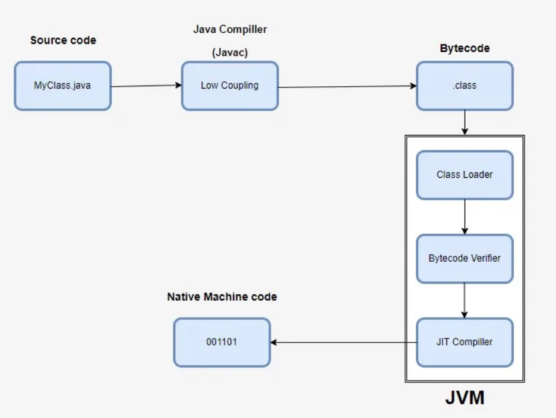

What will happen if we don’t declare the main method as static?
Answer: The program will fail to run because the JVM requires the main method to be static to invoke it without creating an object.
Answer: Java is platform-independent because it uses the concept of bytecode. Java code is compiled into bytecode by the Java compiler, which can then run on any platform with a compatible Java Virtual Machine (JVM). This "Write Once, Run Anywhere" feature is the core of Java's platform independence.

public class Main {
static void myMethod() {
System.out.println("Hello World!");
}
public static void main(String[] args) {
do{
myMethod();
}while(true);
}
}
GraalVM is a high-performance runtime that enhances the execution of Java applications and supports multiple programming languages beyond Java, such as JavaScript, Python, Ruby, R, and even languages like C and C++. It is designed to integrate and optimize applications written in a variety of languages within a single runtime environment.
Answer: A classloader is a subsystem of JVM responsible for loading class files. It converts bytecode into JVM-readable formats. Java has three types of classloaders:
When a request reaches the JVM, it first checks if the class is already loaded. If the class is not loaded, the JVM searches for it using class loaders. If the class cannot be found after all searches, a `ClassNotFoundException` is thrown.

| Component | Description | Includes |
|---|---|---|
| JDK (Java Development Kit) | A complete development environment for building Java applications. | Includes JRE, development tools (javac, jdb), libraries, and other utilities for Java programming. |
| JRE (Java Runtime Environment) | Provides libraries, Java Virtual Machine (JVM), and other components required to run Java programs. | Includes JVM and core libraries required to run Java applications. |
| JVM (Java Virtual Machine) | A virtual machine that executes Java bytecode and provides runtime environment for Java applications. | Includes the bytecode interpreter, garbage collection, and memory management components. |
Answer: JVM memory is divided into the following areas:
Answer: The program will fail to run because the JVM requires the main method to be static to invoke it without creating an object.
Answer: Java provides two categories of data types:
| Data Type | Default Value | Description |
|---|---|---|
| byte | 0 | 8-bit signed integer. |
| short | 0 | 16-bit signed integer. |
| int | 0 | 32-bit signed integer. |
| long | 0L | 64-bit signed integer. |
| float | 0.0f | 32-bit floating-point number. |
| double | 0.0d | 64-bit floating-point number. |
| char | \u0000 | Default Unicode character. |
| boolean | false | Boolean value representing true/false. |
| Data Type | Default Value | Description |
|---|---|---|
| String | null | A reference type representing text. |
| Object | null | Any user-defined or built-in object. |
| Array | null | Arrays are reference types, default to null. |
In Java, wrapper classes are part of the java.lang package and provide an object representation for primitive data types. Each primitive type (e.g., int, double, char) has a corresponding wrapper class (e.g., Integer, Double, Character). These classes "wrap" the primitive data type in an object, allowing primitives to be treated as objects.
Wrapper Classes and Their Corresponding Primitive Types| Primitive Type | Wrapper Class |
|---|---|
| byte | Byte |
| short | Short |
| int | Integer |
| long | Long |
| float | Float |
| double | Double |
| char | Character |
| boolean | Boolean |
ArrayList<Integer> list = new ArrayList<>();
list.add(10); // Autoboxes int to Integer
Integer a = 5; // Autoboxing: int → Integer
int b = a; // Unboxing: Integer → int
Access specifiers in Java define the visibility and accessibility of classes, methods, and variables. They control how and where these components can be accessed within the application. Java provides four main types of access specifiers: public, private, protected, and default (no keyword).
| Access Specifier | Scope | Description |
|---|---|---|
| public | Accessible everywhere | The public specifier allows the member (class, method, or variable) to be accessed from any other class or package. |
| private | Accessible only within the same class | The private specifier restricts access to the member so it is only visible within the class where it is declared. It ensures encapsulation. |
| protected | Accessible within the same package and subclasses | The protected specifier allows the member to be accessed within the same package and by subclasses (even if they are in different packages). |
| default (no keyword) | Accessible within the same package | If no access specifier is specified, it is treated as default. The member is accessible only within the package where it is declared. |
Variables in Java are containers for storing data values. They can be classified into three main types based on where they are declared and how they are used: Instance Variables, Static Variables, and Local Variables. Each type has its specific scope, lifetime, and behavior.
1. Instance VariablesInstance variables are declared inside a class but outside any method, constructor, or block. They are tied to a specific instance of the class, meaning each object has its own copy of these variables.
class Example {
int instanceVar = 10; // Instance variable
void display() {
System.out.println("Instance Variable: " + instanceVar);
}
}
Static variables are declared with the static keyword. They belong to the class rather than any specific instance, meaning all objects of the class share the same static variable.
class Example {
static int staticVar = 20; // Static variable
static void display() {
System.out.println("Static Variable: " + staticVar);
}
}
Local variables are declared within a method, constructor, or block. They are temporary and only exist during the execution of the block in which they are defined.
class Example {
void display() {
int localVar = 30; // Local variable
System.out.println("Local Variable: " + localVar);
}
}
| Aspect | Instance Variables | Static Variables | Local Variables |
|---|---|---|---|
| Declaration | Declared inside the class but outside methods or blocks. | Declared with the static keyword inside the class. | Declared inside methods, constructors, or blocks. |
| Scope | Throughout the lifetime of the object. | Throughout the lifetime of the program (class-level). | Within the block/method where they are defined. |
| Default Value | Assigned default values (e.g., 0, null). | Assigned default values (e.g., 0, null). | No default value; must be initialized before use. |
| Access | Accessed via objects. | Accessed via the class name or objects. | Accessed directly within the defining method/block. |
| Memory | Stored in the heap memory. | Stored in the method area. | Stored in the stack memory. |
In Java, a static block (also called a static initializer block) is a block of code that is executed when the class is loaded into memory. It is used to initialize static variables or perform any setup that is required before the class is used. Static blocks are executed only once, and they run before the main method or any instance of the class is created.
Key Characteristics of Static Block
class Example {
static {
// Code to initialize static variables or perform setup
System.out.println("Static block executed.");
}
}
Example of Static Block
public class StaticBlockExample {
static int staticVar;
// Static block to initialize staticVar
static {
System.out.println("Static block is called.");
staticVar = 100; // Initialize static variable
}
public static void main(String[] args) {
System.out.println("Main method is called.");
System.out.println("Static Variable: " + staticVar);
}
}
Output of the Example
Static block is called.
Main method is called.
Static Variable: 100
Use Cases of Static Block
In Java, methods can either be static (class-level) or instance (object-level). These two types of methods differ in their behavior, accessibility, and use cases.
Static (Class) MethodsStatic methods are declared with the static keyword. They belong to the class rather than any specific object, meaning they can be called directly using the class name without creating an instance of the class.
class StaticExample {
static void staticMethod() {
System.out.println("This is a static method.");
}
public static void main(String[] args) {
StaticExample.staticMethod(); // Calling static method without an instance
}
}
Instance Methods
Instance methods are non-static methods that belong to an object of the class. They require an instance of the class to be invoked and can access instance variables and methods directly.
class InstanceExample {
void instanceMethod() {
System.out.println("This is an instance method.");
}
public static void main(String[] args) {
InstanceExample obj = new InstanceExample(); // Create an object
obj.instanceMethod(); // Call the instance method
}
}
In Java, both new() and newInstance() are used to create objects, but they have different mechanisms and use cases. Below is a detailed explanation of each.
new()
class Example {
Example() {
System.out.println("Constructor called using new().");
}
public static void main(String[] args) {
Example obj = new Example(); // Creates an object using new()
}
}
class Example {
Example() {
System.out.println("Constructor called using newInstance().");
}
public static void main(String[] args) throws Exception {
Class clazz = Class.forName("Example");
Example obj = (Example) clazz.getDeclaredConstructor().newInstance(); // Creates an object dynamically
}
}
Java provides two main hierarchies for handling input and output: Reader/Writer and InputStream/OutputStream. Additionally, various stream types such as FileInputStream, FileOutputStream, BufferedInputStream, and BufferedOutputStream enhance performance and functionality. FilterStreams and I/O Filters add processing capabilities to the streams. Below is a detailed explanation of these concepts.
1. Reader/Writer vs InputStream/OutputStream
import java.io.FileInputStream;
import java.io.FileOutputStream;
public class FileStreamExample {
public static void main(String[] args) throws Exception {
FileInputStream fis = new FileInputStream("input.txt");
FileOutputStream fos = new FileOutputStream("output.txt");
int data;
while ((data = fis.read()) != -1) {
fos.write(data); // Writes data to output.txt
}
fis.close();
fos.close();
}
}
3. BufferedInputStream and BufferedOutputStream
import java.io.BufferedInputStream;
import java.io.FileInputStream;
public class BufferedStreamExample {
public static void main(String[] args) throws Exception {
FileInputStream fis = new FileInputStream("input.txt");
BufferedInputStream bis = new BufferedInputStream(fis);
int data;
while ((data = bis.read()) != -1) {
System.out.print((char) data);
}
bis.close();
fis.close();
}
}
4. FilterStreams
The Reader/Writer hierarchy is for text, while InputStream/OutputStream handles binary data. FileInputStream and FileOutputStream are specific for file-based byte streams, while BufferedInputStream and BufferedOutputStream optimize performance by reducing I/O overhead. FilterStreams and I/O Filters provide advanced capabilities for customizing data processing in streams.
Java provides several ways to take input from the console. These methods differ in terms of simplicity, flexibility, and use cases. Below are the commonly used approaches:
1. Using Scanner Class
import java.util.Scanner;
public class ScannerExample {
public static void main(String[] args) {
Scanner scanner = new Scanner(System.in);
System.out.print("Enter your name: ");
String name = scanner.nextLine();
System.out.print("Enter your age: ");
int age = scanner.nextInt();
System.out.println("Name: " + name + ", Age: " + age);
scanner.close();
}
}
import java.io.BufferedReader;
import java.io.InputStreamReader;
public class BufferedReaderExample {
public static void main(String[] args) throws Exception {
BufferedReader reader = new BufferedReader(new InputStreamReader(System.in));
System.out.print("Enter your name: ");
String name = reader.readLine();
System.out.print("Enter your age: ");
int age = Integer.parseInt(reader.readLine());
System.out.println("Name: " + name + ", Age: " + age);
}
}
import java.io.Console;
public class ConsoleExample {
public static void main(String[] args) {
Console console = System.console();
if (console != null) {
String name = console.readLine("Enter your name: ");
int age = Integer.parseInt(console.readLine("Enter your age: "));
System.out.println("Name: " + name + ", Age: " + age);
} else {
System.out.println("Console is not available.");
}
}
}
import java.io.DataInputStream;
public class DataInputStreamExample {
public static void main(String[] args) throws Exception {
DataInputStream dis = new DataInputStream(System.in);
System.out.print("Enter your name: ");
String name = dis.readLine();
System.out.print("Enter your age: ");
int age = Integer.parseInt(dis.readLine());
System.out.println("Name: " + name + ", Age: " + age);
}
}
public class CommandLineExample {
public static void main(String[] args) {
if (args.length > 0) {
String name = args[0];
int age = Integer.parseInt(args[1]);
System.out.println("Name: " + name + ", Age: " + age);
} else {
System.out.println("No arguments passed.");
}
}
}
Java offers multiple ways to take console input depending on your requirements. For beginner-friendly input, use Scanner. For efficient reading, choose BufferedReader. If you're working in a command-line environment, Console is a good option. For legacy systems, you may encounter DataInputStream, and command-line arguments are best for static input.
Answer:
int x = -8; // Binary: 11111111111111111111111111111000 System.out.println(x >> 2); // Output: -2 (Arithmetic shift) System.out.println(x >>> 2); // Output: 1073741822 (Logical shift)
In Java, Covariant Return Type refers to the ability of an overriding method in a subclass to return a more specific (or derived) type than the return type declared in the method of the superclass.
Key Points:
class Animal {
Animal getAnimal() {
System.out.println("Returning an Animal");
return new Animal();
}
}
class Dog extends Animal {
@Override
Dog getAnimal() {
System.out.println("Returning a Dog");
return new Dog();
}
}
public class CovariantReturnTypeExample {
public static void main(String[] args) {
Animal animal = new Animal();
animal.getAnimal(); // Outputs: Returning an Animal
Animal dog = new Dog();
dog.getAnimal(); // Outputs: Returning a Dog
}
}
Why is Covariant Return Type Useful?
The Covariant Return Type feature makes method overriding more flexible by allowing a subclass to narrow the return type. It improves code usability, particularly in polymorphic scenarios, by enabling type-specific behavior without requiring explicit casting.
Serialization and Deserialization are processes used in Java to save the state of an object to a medium (like a file or a network) and reconstruct the object from that medium, respectively.
What is Serialization?Serialization is the process of converting an object into a byte stream, which can be saved to a file, sent over a network, or stored in a database. It enables the persistence of object states for later reconstruction.
Deserialization is the process of reconstructing an object from a byte stream. It is the reverse of serialization and restores the saved state of an object.
The transient keyword in Java is used to indicate that a variable should not be serialized during the serialization process.
Example of Serialization and Deserialization
import java.io.*;
// Class must implement Serializable
class User implements Serializable {
private static final long serialVersionUID = 1L;
private String name;
private transient int age; // 'age' will not be serialized
public User(String name, int age) {
this.name = name;
this.age = age;
}
@Override
public String toString() {
return "Name: " + name + ", Age: " + age;
}
}
public class SerializationExample {
public static void main(String[] args) {
User user = new User("Alice", 25);
// Serialization
try (ObjectOutputStream oos = new ObjectOutputStream(new FileOutputStream("user.ser"))) {
oos.writeObject(user);
System.out.println("Serialization done: " + user);
} catch (IOException e) {
e.printStackTrace();
}
// Deserialization
try (ObjectInputStream ois = new ObjectInputStream(new FileInputStream("user.ser"))) {
User deserializedUser = (User) ois.readObject();
System.out.println("Deserialization done: " + deserializedUser);
} catch (IOException | ClassNotFoundException e) {
e.printStackTrace();
}
}
}
Output: After deserialization, the age field will show its default value (0), as it was marked transient.
Custom Serialization CodeYou can customize the serialization process by defining writeObject and readObject methods in your class.
import java.io.*;
class CustomUser implements Serializable {
private static final long serialVersionUID = 1L;
private String name;
private transient int age; // 'age' is transient but will be manually serialized
public CustomUser(String name, int age) {
this.name = name;
this.age = age;
}
private void writeObject(ObjectOutputStream oos) throws IOException {
oos.defaultWriteObject(); // Serialize non-transient fields
oos.writeInt(age); // Manually serialize transient field
}
private void readObject(ObjectInputStream ois) throws IOException, ClassNotFoundException {
ois.defaultReadObject(); // Deserialize non-transient fields
age = ois.readInt(); // Manually deserialize transient field
}
@Override
public String toString() {
return "Name: " + name + ", Age: " + age;
}
}
public class CustomSerializationExample {
public static void main(String[] args) {
CustomUser user = new CustomUser("Bob", 30);
// Custom Serialization
try (ObjectOutputStream oos = new ObjectOutputStream(new FileOutputStream("customUser.ser"))) {
oos.writeObject(user);
System.out.println("Custom Serialization done: " + user);
} catch (IOException e) {
e.printStackTrace();
}
// Custom Deserialization
try (ObjectInputStream ois = new ObjectInputStream(new FileInputStream("customUser.ser"))) {
CustomUser deserializedUser = (CustomUser) ois.readObject();
System.out.println("Custom Deserialization done: " + deserializedUser);
} catch (IOException | ClassNotFoundException e) {
e.printStackTrace();
}
}
}
Output: Even though the age field is marked as transient, it will be properly serialized and deserialized because of the custom implementation.
Advantages of SerializationSerialization and Deserialization are essential features in Java for persisting and transferring objects. By customizing the process using writeObject and readObject, developers can control how data is serialized, especially for transient fields or fields requiring special handling.
String in Java is an immutable object that represents a sequence of characters. It is used to store and manipulate text data. Strings are created using string literals (e.g., `"Hello"`) or the `new` keyword (e.g., `new String("Hello")`).
String str1 = "Hello"; // Creates a string literal in the pool
String str2 = "Hello"; // Reuses the existing "Hello" from the pool
String str3 = new String("Hello"); // Creates a new String object on the heap, not in the pool
System.out.println(str1 == str2); // true (points to the same reference)
System.out.println(str1 == str3); // false (different objects)
What is the Java String Pool?
The Java String Pool is a special memory area in Java where string literals are stored. It helps improve performance by reusing string objects to avoid creating duplicate strings.
String str = "Hello";
str += " World"; // Creates a new String object each time
System.out.println(str); // "Hello World"
StringBuffer sb = new StringBuffer("Hello");
sb.append(" World"); // Modifies the existing StringBuffer object
System.out.println(sb.toString()); // "Hello World"
Code Snippet Comparing StringBuffer and StringBuilder
// StringBuffer example
StringBuffer sbf = new StringBuffer("Hello");
sbf.append(" World");
System.out.println(sbf.toString()); // "Hello World"
// StringBuilder example
StringBuilder sbd = new StringBuilder("Hello");
sbd.append(" World");
System.out.println(sbd.toString()); // "Hello World"
Why is StringBuffer called mutable?
StringBuffer is mutable because its methods (`append()`, `insert()`, `delete()`, etc.) modify the contents of the object directly. Unlike String, which creates a new object on every modification, StringBuffer modifies the existing object.
Custom Example of String Modifications
// Using String
String str = "Hello";
str += " World"; // Creates a new String object each time
System.out.println(str); // "Hello World"
// Using StringBuffer
StringBuffer sb = new StringBuffer("Hello");
sb.append(" World"); // Modifies the existing StringBuffer object
System.out.println(sb.toString()); // "Hello World"
Summary
Java offers various classes for handling strings, each with its own characteristics: - String is immutable and stored in the string pool. - StringBuffer is synchronized and thread-safe, allowing for modifications. - StringBuilder is similar to StringBuffer but not synchronized, providing better performance for single-threaded use cases.
Differences between String, StringBuilder, and StringBuffer| Feature | String | StringBuffer | StringBuilder |
|---|---|---|---|
| Mutability | Immutable | Mutable (thread-safe) | Mutable (not thread-safe) |
| Thread Safety | No | Yes (synchronized) | No |
| Performance | Slower due to immutability | Slower due to synchronization | Faster due to lack of synchronization |
| Use Cases | Simple text manipulation | Multi-threaded applications | Single-threaded applications |
A Marker Interface in Java is an interface that does not contain any methods or fields. It is an empty interface used to provide a "marker" or "tag" to a class. The presence of a marker interface indicates to the Java runtime or a specific framework that the class implementing the interface has a specific property or behavior.
If we try to clone object that doesn’t implement the marker interface(Cloneable) the JVM throws CloneNotSupportedException.
Examples of Marker InterfacesHere is an example of how to create and use a custom marker interface:
// Marker Interface
public interface MyMarkerInterface {
}
// Class implementing the marker interface
public class MyClass implements MyMarkerInterface {
public void display() {
System.out.println("MyClass implementing MyMarkerInterface.");
}
}
// Test the marker interface
public class MarkerInterfaceTest {
public static void main(String[] args) {
MyClass obj = new MyClass();
// Check if the object is an instance of MyMarkerInterface
if (obj instanceof MyMarkerInterface) {
System.out.println("MyClass is marked with MyMarkerInterface.");
} else {
System.out.println("MyClass is not marked with MyMarkerInterface.");
}
}
}
Output:
MyClass is marked with MyMarkerInterface.
Alternatives to Marker Interfaces
In modern Java, annotations are often used as an alternative to marker interfaces because they provide more flexibility and allow metadata to be added to classes without altering the inheritance hierarchy.
For example:
// Using an annotation instead of a marker interface
@interface MyMarker {
}
@MyMarker
public class MyClass {
}
No, private methods cannot be overridden in Java. Private methods are not accessible outside the class in which they are declared, so they are not part of the class's inheritance structure. Instead, if a subclass defines a method with the same name and parameters as a private method in the parent class, it is considered as a separate, independent method in the subclass (not an override).
class Parent {
private void display() {
System.out.println("Private method in Parent.");
}
}
class Child extends Parent {
private void display() {
System.out.println("Private method in Child.");
}
}
public class Test {
public static void main(String[] args) {
Child child = new Child();
// child.display(); // Error: Cannot access private method
}
}
Explanation: Each class has its own `display()` method. The child class does not override the parent’s private method.
Static MethodsNo, static methods cannot be overridden in Java, but they can be re-declared (hidden). Static methods belong to the class rather than an instance, so they are not subject to runtime polymorphism. If a subclass defines a static method with the same signature as a static method in the parent class, it hides the parent class's method rather than overriding it.
class Parent {
static void display() {
System.out.println("Static method in Parent.");
}
}
class Child extends Parent {
static void display() {
System.out.println("Static method in Child.");
}
}
public class Test {
public static void main(String[] args) {
Parent parent = new Parent();
parent.display(); // Output: Static method in Parent.
Parent child = new Child();
child.display(); // Output: Static method in Parent (method hiding, not overriding).
Child actualChild = new Child();
actualChild.display(); // Output: Static method in Child.
}
}
Explanation: The `display()` method in the `Child` class hides the `display()` method in the `Parent` class. Which method is called depends on the type of the reference at compile time.
A shallow copy of an object copies only the object's top-level structure. It does not create separate copies of the objects referenced within the original object. Instead, the references are shared between the original and the copied object.
Implication: Changes to the referenced objects affect both the original and the copied object because they share the same reference.
import java.util.Arrays;
class ShallowCopyExample {
int[] data;
ShallowCopyExample(int[] data) {
this.data = data;
}
public ShallowCopyExample shallowCopy() {
return new ShallowCopyExample(this.data); // Only the reference is copied
}
}
public class Test {
public static void main(String[] args) {
int[] numbers = {1, 2, 3};
ShallowCopyExample original = new ShallowCopyExample(numbers);
ShallowCopyExample copy = original.shallowCopy();
// Modifying the copied object's data
copy.data[0] = 99;
System.out.println("Original: " + Arrays.toString(original.data)); // [99, 2, 3]
System.out.println("Copy: " + Arrays.toString(copy.data)); // [99, 2, 3]
}
}
Output: Changes in the copied object's array reflect in the original object.
What is a Deep Copy?A deep copy creates an entirely new object, along with independent copies of all the objects it references. This ensures that changes to the copied object do not affect the original object and vice versa.
Implication: Deep copy provides full independence between the original and the copied object.
import java.util.Arrays;
class DeepCopyExample {
int[] data;
DeepCopyExample(int[] data) {
this.data = data;
}
public DeepCopyExample deepCopy() {
// Create a new object and a copy of the array
return new DeepCopyExample(Arrays.copyOf(this.data, this.data.length));
}
}
public class Test {
public static void main(String[] args) {
int[] numbers = {1, 2, 3};
DeepCopyExample original = new DeepCopyExample(numbers);
DeepCopyExample copy = original.deepCopy();
// Modifying the copied object's data
copy.data[0] = 99;
System.out.println("Original: " + Arrays.toString(original.data)); // [1, 2, 3]
System.out.println("Copy: " + Arrays.toString(copy.data)); // [99, 2, 3]
}
}
Output: Changes in the copied object's array do not reflect in the original object.
A constructor is a special method in Java used to initialize objects. It is invoked automatically when an object of a class is created. Constructors have the same name as the class and do not have a return type, not even void.
Key Features of Constructors
class Example {
int value;
// Default constructor
public Example() {
value = 0;
System.out.println("Default constructor called.");
}
// Parameterized constructor
public Example(int value) {
this.value = value;
System.out.println("Parameterized constructor called.");
}
}
public class Test {
public static void main(String[] args) {
Example obj1 = new Example(); // Calls default constructor
Example obj2 = new Example(42); // Calls parameterized constructor
}
}
Calling a Constructor Inside Another Constructor
In Java, you can call one constructor from another using the this() keyword. This process is known as constructor chaining. It helps avoid code duplication and ensures consistent initialization logic.
class Example {
int a, b;
// Constructor 1
public Example() {
this(10, 20); // Calls Constructor 2
System.out.println("Default constructor called.");
}
// Constructor 2
public Example(int a, int b) {
this.a = a;
this.b = b;
System.out.println("Parameterized constructor called with values: " + a + ", " + b);
}
}
public class Test {
public static void main(String[] args) {
Example obj = new Example(); // Chained constructors will be invoked
}
}
Output:
Parameterized constructor called with values: 10, 20
Default constructor called.
Can a Constructor Return a Value?
No, constructors cannot return a value. By design, constructors do not have a return type, as their sole purpose is to initialize an object. However, constructors can implicitly return the reference to the newly created object.
class Example {
Example() {
System.out.println("Constructor called.");
}
}
public class Test {
public static void main(String[] args) {
Example obj = new Example(); // Constructor creates and returns the object reference
}
}
Difference Between Constructors and Methods
| Aspect | Constructors | Methods |
|---|---|---|
| Purpose | Used for initializing an object. | Used to define behavior or operations of an object. |
| Name | Must have the same name as the class. | Can have any name, typically a verb or action word. |
| Return Type | No return type (not even void). | Must have a return type (e.g., void, int). |
| Invocation | Automatically called when an object is created. | Called explicitly using the object's reference. |
In Java, everything is pass-by-value. However, the way it behaves for primitive types and reference types can sometimes create confusion. Understanding how Java handles passing values and references is crucial to clearing this up.
Pass-by-Value in JavaWhen a method is called, the actual value of the argument is passed to the method. The method works on a copy of the argument, meaning changes made inside the method do not affect the original variable in the calling code.
Behavior for Primitive TypesFor primitive types (e.g., int, double), the method receives a copy of the value. Any modifications to the value inside the method do not affect the original variable.
public class Test {
public static void modifyPrimitive(int num) {
num = 10; // This change affects only the local copy
}
public static void main(String[] args) {
int x = 5;
modifyPrimitive(x);
System.out.println("Value of x: " + x); // Output: Value of x: 5
}
}
Explanation: The method modifyPrimitive() changes only the local copy of the variable. The original x remains unchanged.
Behavior for Reference TypesFor reference types (e.g., objects, arrays), the reference to the object is passed by value. This means the method receives a copy of the reference. The method can modify the object that the reference points to, but it cannot change the reference itself in the calling code.
class Data {
int value;
}
public class Test {
public static void modifyObject(Data obj) {
obj.value = 10; // Modifies the object the reference points to
}
public static void main(String[] args) {
Data d = new Data();
d.value = 5;
modifyObject(d);
System.out.println("Value of d.value: " + d.value); // Output: Value of d.value: 10
}
}
Explanation: The method modifyObject() changes the state of the object that the reference d points to. Therefore, the original object's state is affected.
No, the method cannot change the reference itself in the calling code because the reference is passed by value. It can only modify the object that the reference points to.
class Data {
int value;
}
public class Test {
public static void changeReference(Data obj) {
obj = new Data(); // This changes only the local reference
obj.value = 20;
}
public static void main(String[] args) {
Data d = new Data();
d.value = 5;
changeReference(d);
System.out.println("Value of d.value: " + d.value); // Output: Value of d.value: 5
}
}
Explanation: In the method changeReference(), the local reference obj is reassigned to a new object, but the original reference d in the calling code remains unaffected.
Summary| Aspect | Primitive Types | Reference Types |
|---|---|---|
| Passed Value | A copy of the primitive value is passed. | A copy of the reference is passed. |
| Effect of Modifications | Changes inside the method do not affect the original variable. | The object the reference points to can be modified, but the reference itself cannot be changed in the caller. |
Object Cloning is the process of creating an exact copy of an object. In Java, this is done using the clone() method defined in the Object class. Cloning is primarily used when you want to create a copy of an object with the same state as the original.
How Does Object Cloning Work?To enable cloning, a class must:
If the Cloneable interface is not implemented, the JVM throws a CloneNotSupportedException when clone() is invoked.
Example of Object Cloning
class Person implements Cloneable {
String name;
int age;
Person(String name, int age) {
this.name = name;
this.age = age;
}
@Override
protected Object clone() throws CloneNotSupportedException {
return super.clone();
}
}
public class Test {
public static void main(String[] args) {
try {
Person original = new Person("John", 30);
Person cloned = (Person) original.clone();
System.out.println("Original: " + original.name + ", " + original.age);
System.out.println("Cloned: " + cloned.name + ", " + cloned.age);
// Verify the two objects are different
System.out.println("Are objects same? " + (original == cloned)); // false
} catch (CloneNotSupportedException e) {
e.printStackTrace();
}
}
}
Output:
Original: John, 30
Cloned: John, 30
Are objects same? false
Types of Cloning
Cloning can be categorized into two types:
class Address {
String city;
Address(String city) {
this.city = city;
}
}
class Person implements Cloneable {
String name;
Address address;
Person(String name, Address address) {
this.name = name;
this.address = address;
}
@Override
protected Object clone() throws CloneNotSupportedException {
return super.clone(); // Shallow copy
}
}
public class Test {
public static void main(String[] args) throws CloneNotSupportedException {
Address address = new Address("New York");
Person original = new Person("John", address);
Person cloned = (Person) original.clone();
System.out.println("Original address: " + original.address.city);
System.out.println("Cloned address: " + cloned.address.city);
// Modify the address
cloned.address.city = "Los Angeles";
System.out.println("Original address after modification: " + original.address.city); // Los Angeles
}
}
Output:
Original address: New York
Cloned address: New York
Original address after modification: Los Angeles
Explanation: Both the original and cloned objects share the same address reference.
class Address {
String city;
Address(String city) {
this.city = city;
}
// Deep copy for Address
public Address copy() {
return new Address(this.city);
}
}
class Person implements Cloneable {
String name;
Address address;
Person(String name, Address address) {
this.name = name;
this.address = address;
}
@Override
protected Object clone() throws CloneNotSupportedException {
Person cloned = (Person) super.clone();
cloned.address = this.address.copy(); // Deep copy
return cloned;
}
}
public class Test {
public static void main(String[] args) throws CloneNotSupportedException {
Address address = new Address("New York");
Person original = new Person("John", address);
Person cloned = (Person) original.clone();
System.out.println("Original address: " + original.address.city);
System.out.println("Cloned address: " + cloned.address.city);
// Modify the address
cloned.address.city = "Los Angeles";
System.out.println("Original address after modification: " + original.address.city); // New York
}
}
Output:
Original address: New York
Cloned address: New York
Original address after modification: New York
Explanation: In deep cloning, a new Address object is created for the clone, ensuring complete independence.
Key Differences Between Shallow Cloning and Deep Cloning| Aspect | Shallow Cloning | Deep Cloning |
|---|---|---|
| Definition | Copies the object and shares references to the objects it references. | Copies the object and creates independent copies of all referenced objects. |
| Performance | Faster as it does not copy referenced objects. | Slower due to the creation of additional copies. |
| Memory Usage | Uses less memory. | Requires more memory due to duplication. |
| Independence | Changes to referenced objects affect both the original and the cloned object. | Complete independence between the original and cloned objects. |
Answer: Arrays can be copied using methods like System.arraycopy(), Arrays.copyOf(), or clone().
int[] original = {1, 2, 3};
int[] copy = Arrays.copyOf(original, original.length);
Answer: A jagged array is a multi-dimensional array where each row can have a different length.
int[][] jagged = {
{1, 2},
{3, 4, 5},
{6}
};
The Object class is the parent class of all classes in Java. Every class in Java either directly or indirectly inherits from the Object class. It is part of the java.lang package, so it is automatically imported into every Java program.
The Object class provides basic methods that are essential for all objects, such as comparing objects, cloning, getting class information, and more.
Methods in the Object ClassThe following are the key methods provided by the Object class:
| Method | Description | Example |
|---|---|---|
| toString() | Returns a string representation of the object. By default, it returns the class name followed by the hash code. |
class Example {
int value = 10;
@Override
public String toString() {
return "Value: " + value;
}
public static void main(String[] args) {
Example obj = new Example();
System.out.println(obj.toString()); // Output: Value: 10
}
}
|
| equals(Object obj) | Compares the current object with the specified object. By default, it checks reference equality. This method can be overridden for custom equality logic. |
class Example {
int id;
Example(int id) {
this.id = id;
}
@Override
public boolean equals(Object obj) {
if (this == obj) return true;
if (obj == null || getClass() != obj.getClass()) return false;
Example example = (Example) obj;
return id == example.id;
}
public static void main(String[] args) {
Example obj1 = new Example(1);
Example obj2 = new Example(1);
System.out.println(obj1.equals(obj2)); // Output: true
}
}
|
| hashCode() | Returns an integer hash code value for the object. This is used for hashing-based collections like HashMap or HashSet. |
class Example {
int id;
Example(int id) {
this.id = id;
}
@Override
public int hashCode() {
return id * 31; // Custom hash logic
}
public static void main(String[] args) {
Example obj = new Example(5);
System.out.println(obj.hashCode()); // Output: 155
}
}
|
| getClass() | Returns the runtime class of the object. It is useful for reflection. |
class Example {
public static void main(String[] args) {
Example obj = new Example();
System.out.println(obj.getClass()); // Output: class Example
}
}
|
| clone() | Creates a shallow copy of the object. The class must implement the Cloneable interface; otherwise, a CloneNotSupportedException is thrown. |
class Example implements Cloneable {
int value;
Example(int value) {
this.value = value;
}
@Override
protected Object clone() throws CloneNotSupportedException {
return super.clone();
}
public static void main(String[] args) throws CloneNotSupportedException {
Example obj1 = new Example(10);
Example obj2 = (Example) obj1.clone();
System.out.println(obj2.value); // Output: 10
}
}
|
| finalize() | Called by the garbage collector before the object is destroyed. It is rarely used in modern Java development. |
class Example {
@Override
protected void finalize() throws Throwable {
System.out.println("Object is being garbage collected");
}
public static void main(String[] args) {
Example obj = new Example();
obj = null; // Eligible for garbage collection
System.gc(); // Suggests JVM to run Garbage Collector
}
}
|
| wait(), notify(), notifyAll() | These methods are used for inter-thread communication. They must be called within synchronized blocks. |
class Example {
public static void main(String[] args) {
Object lock = new Object();
Thread t1 = new Thread(() -> {
synchronized (lock) {
try {
System.out.println("Thread 1 waiting");
lock.wait();
System.out.println("Thread 1 resumed");
} catch (InterruptedException e) {
e.printStackTrace();
}
}
});
Thread t2 = new Thread(() -> {
synchronized (lock) {
System.out.println("Thread 2 notifying");
lock.notify();
}
});
t1.start();
t2.start();
}
}
|
The Object class provides fundamental methods required by all Java objects. It is designed to be overridden in custom classes for enhanced functionality, such as custom equality, hash code logic, or string representation.
Answer:
Answer: Yes, using the this() keyword, one constructor can call another in the same class.
class Example {
Example() {
this(42); // Calls parameterized constructor
}
Example(int data) {
System.out.println("Data: " + data);
}
}
| Comparison | == (Equality Operator) | .equals() Method |
|---|---|---|
| Purpose | Compares memory addresses (reference comparison). | Compares the actual content (value comparison). |
| Usage | Used for comparing primitive data types and object references. | Used for comparing values of objects, especially in custom classes. |
| Example with Strings |
String s1 = "Hello";
String s2 = "Hello";
System.out.println(s1 == s2); // true (same memory reference)
|
String s1 = new String("Hello");
String s2 = new String("Hello");
System.out.println(s1.equals(s2)); // true (same value)
|
| Custom Objects | Compares memory locations of objects. | Can be overridden in a class to define custom equality logic. |
The equals() and hashCode() methods are fundamental methods in Java, defined in the Object class. They are essential for comparing objects and using objects in collections like HashSet, HashMap, or HashTable.
1. Purpose of equals()The equals() method is used to compare the equality of two objects. By default, the implementation in the Object class checks for reference equality, meaning it checks if the two objects point to the same memory location. This method is often overridden to provide custom equality logic based on the object's state.
public boolean equals(Object obj) {
return (this == obj);
}
class Person {
private String name;
private int age;
public Person(String name, int age) {
this.name = name;
this.age = age;
}
@Override
public boolean equals(Object obj) {
if (this == obj) return true;
if (obj == null || getClass() != obj.getClass()) return false;
Person person = (Person) obj;
return age == person.age && name.equals(person.name);
}
}
public class Main {
public static void main(String[] args) {
Person p1 = new Person("Alice", 25);
Person p2 = new Person("Alice", 25);
System.out.println(p1.equals(p2)); // Output: true
}
}
2. Purpose of hashCode()
The hashCode() method returns an integer hash code value for the object. This value is used in hashing-based collections like HashMap, HashSet, and HashTable to determine the bucket where the object will be stored.
If two objects are considered equal (via equals()), their hash codes must also be equal. However, two objects with the same hash code do not necessarily have to be equal (this is known as a hash collision).
public native int hashCode();
class Person {
private String name;
private int age;
public Person(String name, int age) {
this.name = name;
this.age = age;
}
@Override
public int hashCode() {
return name.hashCode() * 31 + age;
}
@Override
public boolean equals(Object obj) {
if (this == obj) return true;
if (obj == null || getClass() != obj.getClass()) return false;
Person person = (Person) obj;
return age == person.age && name.equals(person.name);
}
}
public class Main {
public static void main(String[] args) {
Person p1 = new Person("Alice", 25);
Person p2 = new Person("Alice", 25);
System.out.println(p1.hashCode() == p2.hashCode()); // Output: true
}
}
3. Relationship Between equals() and hashCode()
Hashing-based collections rely on these methods:
| Method | Purpose | Default Behavior | When to Override |
|---|---|---|---|
| equals() | Checks for equality between two objects. | Checks reference equality (same memory location). | When you want to compare objects based on their state or content. |
| hashCode() | Returns a hash code value for the object. | Generates a unique hash code based on memory address. | When using the object in hashing-based collections (e.g., HashMap, HashSet). |
class Person {
String name; // Stored in heap
}
Person p1 = new Person(); // Allocated in heap memory
void method() {
int x = 10; // Stored in stack memory
}
Answer: Java uses automatic garbage collection to manage memory. Objects no longer referenced are eligible for collection by the garbage collector.
| Keyword/Method | Definition | Usage | Example |
|---|---|---|---|
| final (Keyword) | Used to declare constants, prevent method overriding, or inheritance of a class. |
|
final int x = 10; // Constant variable
final class A {} // Cannot be extended
class B {
final void show() {} // Cannot be overridden
}
|
| finally (Block) | A block in exception handling that executes whether an exception occurs or not. |
|
try {
int a = 5 / 0;
} catch (Exception e) {
System.out.println("Exception caught");
} finally {
System.out.println("Finally block executed");
}
|
| finalize() (Method) | A method in the Object class used for garbage collection before an object is destroyed. |
|
class Test {
protected void finalize() {
System.out.println("Finalize method called");
}
}
Test obj = new Test();
obj = null; // Eligible for GC
System.gc(); // Requests garbage collection
|